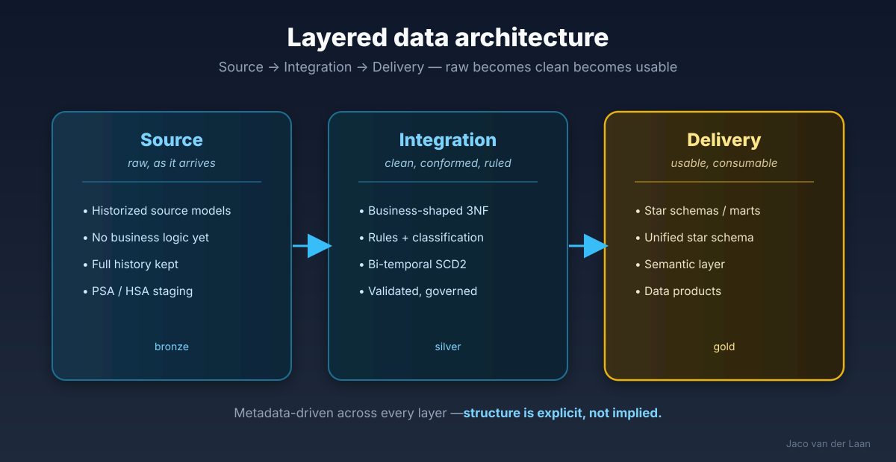

Not a list of articles — a structured body of work.
Twenty-five years and 230+ published articles, organised into the domains I actually work in. Each one is a thread I've thought through in depth, in public. Structure, applied to my own expertise.

The backbone of most of my work: source → integration → delivery, metadata-driven throughout.
Data architecture
Layered · governed · the foundation
My core domain: designing the layers, patterns and integration that make a platform reliable by construction, not by heroics. The town-plan beneath the buildings.
The Complete Guide to Data Architecture Layers
The Case for a Business-Shaped Integration Layer
Foundations of the Common Integration Layer in a Data Mesh Platform
The Four Pillars of Business-Centered Data Architecture
A deep specialism: treating metadata as the executable heart of the platform — explicit, governed, machine-readable. The thread running through almost everything I build.
SQL-First Modeling: Write SQL, Get Metadata for Free
Atomic SQL: Self-Contained Pipelines That Carry Their Own Metadata
Sidecar Tables: Companion Metadata for Data Assets
Metadata Is the Hidden Engine of Model-Driven Data Platforms
Business-first · a shared language · communication
My strongest conviction: good models start with the business, not the database — and modeling is as much about communication as notation. Business-friendly mapping and universal models that business, engineers and AI can all share. Shaped by Alec Sharp's masterclass.
Why We Need a Business-Friendly Data Transformation Model
Beyond Tools: Metadata-Driven Modeling as a Shared Language Between Business, Engineers, and AI
Roadmaps, Not Pipelines — Business-Friendly Mapping from Sources to Targets
Bridging the Universal Canonical Model with Business-Friendly Engineering
A deep specialism — especially bi-temporal modeling: capturing how data changes over time and when we knew it, correctly. Data Vault principles without the dogma, dual / bi-temporal SCD2, and deterministic historization — true history you can actually trust and query.
SCD2 Is Not Enough (Part 1 & 2): The Bi-Temporal Foundation
Bi-Temporal SCD2 with Redelivery Support
Insert-Only vs Updateable Bitemporal SCD2: A Decision Framework
Lessons from Data Vault — Principles Without the Dogma
Bi-temporal modeling — capturing both when something was true and when we recorded it.
SQL migration & testing
Regression-tested · deterministic · proven
Migrating legacy SQL to modern platforms — and proving the result is identical. CTE-by-CTE regression testing, deterministic generation, and validation that catches what final-output checks miss. See the signature engagement →
Treating SQL as structured metadata, not text: parsing legacy SQL into logical building blocks, and generating clean, deterministic, multi-dialect SQL back out. Write the intent once, generate the code reliably.
Model-Driven Data Engineering as a closed loop — metadata is the source of truth, code is generated.
Data quality & governance
Validation · lineage · trust
Reliability as a first-class concern: data quality as metadata, functional (not just code-based) lineage, governed corrections, and validation built into the pipeline. The wedge that makes the rest trustworthy.
Quality Metadata Exchange: Trust Through Transparency
From Technical Lineage to Functional Understanding
Designing a Governed Data Correction & Adjustment Module
Where my newest work lives: making AI reliable for data work through structure and rules, not hype. Metadata copilots without the magic, AI-assisted modeling and testing, and the validation loop that keeps generated output honest.
AI-Assisted Modeling — Realistic Metadata Copilots Without the Hype
AI Can Explain Architecture — But It Can't Invent It
AI-Assisted Testing: Why Requirements Matter More, Not Less
The Future of Data Architecture Is AI-Assisted and Metadata-Driven
A through-line in everything I do: making the complex clear. Architecture, data models, processes and lineage turned into diagrams people actually understand — and, in my world, generated automatically from metadata so the picture never drifts from the truth. Good modeling is as much communication as notation.
yEd & draw.io — my go-to tools for clear, hand-crafted diagrams
Hands-on, deep expertise with enterprise data-modeling tools — and the experience of pushing them well beyond their defaults. At de Volksbank I customised SAP PowerDesigner to generate physical mappings and SQL from logical models, and to parse SQL back into the model for full lineage. I also work extensively with erwin Data Modeler.